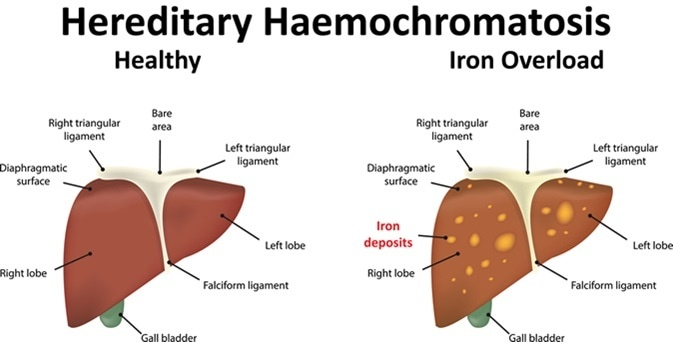

Hemochromatosis

SYMPTOMS:
Some people with hereditary hemochromatosis never have symptoms. Early signs and symptoms often overlap with those of other common conditions.
- Joint pain
-
Abdominal pain
-
Fatigue
-
Weakness
-
Diabetes
-
Loss of sex drive
-
Impotence
-
Heart failure
-
Liver failure
-
Bronze or gray skin color
-
Memory fog
CAUSES
- Hereditary hemochromatosis is caused by a mutation in a gene that controls the amount of iron your body absorbs from the food you eat. These mutations are passed from parents to children. This type of hemochromatosis is by far the most common type.
DIAGNOSIS:
- Serum transferrin saturation. This test measures the amount of iron bound to a protein (transferrin) that carries iron in your blood. Transferrin saturation values greater than 45% are considered too high.
-
Serum ferritin. This test measures the amount of iron stored in your liver. If the results of your serum transferrin saturation test are higher than normal, your doctor will check your serum ferritin.
TREATMENT
Blood Removal
- Initial treatment schedule. Initially, you may have a pint (about 470 milliliters) of blood taken once or twice a week — usually in a hospital or your doctor's office. While you recline in a chair, a needle is inserted into a vein in your arm. The blood flows from the needle into a tube that's attached to a blood bag.
-
Maintenance treatment schedule. Once your iron levels have returned to normal, blood can be removed less often, typically every two to three months. Some people may maintain normal iron levels without having any blood taken, and some may need to have blood removed monthly. The schedule depends on how rapidly iron accumulates in your body.